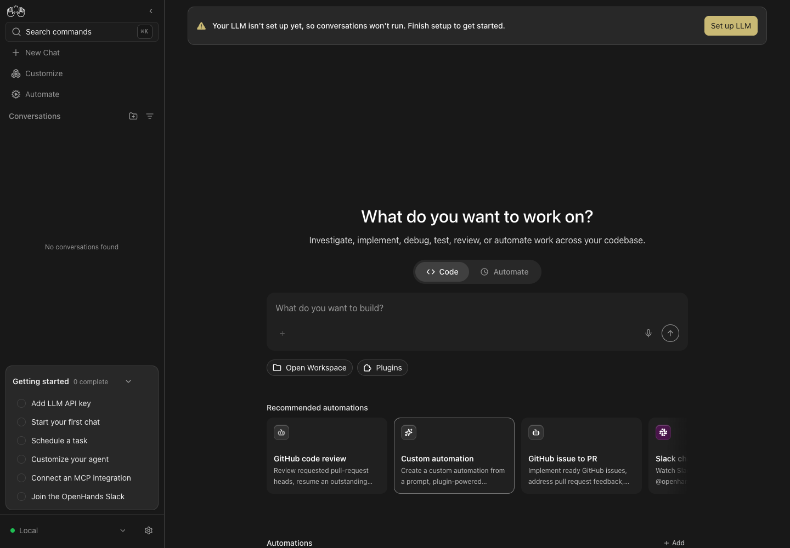

Matching films · draft checkpoint
Command menu: shared recipes
Draft #18966 compares ec0f70fe31/2eb3fb8c7b4d1fca with exact capture/app/library b8c3ea7d50/bf62017c750db5ca. Fifteen named states and 12,936 selected property pairs match. Existing typography, native menu/search/scroll, shadow/filter composition and narrow phone truncation remain. Settings may show the secret name, never its value.
The source/build identities and limits, comparison, authority/source binding and 30 PNGs/4 complete native clips are pinned to local asset B. Live proof is standalone Local Neutral/Light+ selected through actual UI/resolved CSS; legacy data-theme is null. Compiler/fixture host contracts are separate, and 44/41 per-owner test runs overlap the Vite suite. No live auth/provider/embedded claim, global pixel identity, synchronized-frame identity or visual improvement.
Backend chooser: shared recipes
Draft #18967 compares ec0f70fe31/2eb3fb8c7b4d1fca with exact capture/app/library 3dd7c0f4ed/e5a7cff1007a54ec. Twenty-two named states and 4,554 selected property pairs match. Short modals open at normal phone size before resize/scroll; initial entry via the existing 420 px-short drawer is outside the claim. Canonical Remote closed state uses natural Tab and settled animations; exploratory pre-settle captures are excluded. The owned key stays product-masked and .test host is inert.
The source/build identities and limits, comparison, authority/source binding and 44 PNGs/4 complete native clips are pinned to local asset B. Live proof is standalone Local Neutral/Light+ selected through actual UI/resolved CSS; legacy data-theme is null. Compiler/fixture host contracts are separate, and 44/41 per-owner test runs overlap the Vite suite. No live auth/provider/embedded claim, global pixel identity, synchronized-frame identity or visual improvement.
Both packets are frozen in local-only asset commit 4ef2deeff4; public HTTP/Chrome/live-anchor checks are pending. Root source/decoded-film and independent frozen-asset gates pass. Both remain draft/NoBot at seven checks passed, one expected media-description failure and six skipped. All 82 originals retain their bytes; three shared owned runs are stopped/purged and fifteen actual owned ports are closed. Films are 25 fps H.264/AAC with fast start, posters/captions and original ambience averaging −52.5 dB. No new GIF, model invocation, auth submission, conversation creation or Automation execution.
Automation setup: one combined layout batch
Merged #18950 compares 7a41641c6d/b3c37b99a7fa4c41 with captured checkout/app 7569edff89/2eb3fb8c7b4d1fca. Actual library source is ceb0402562; final PR eef335c07d is source-identical through an erased-type-only test correction. The film never relabels captured pixels as that final head. All 42 named states and 16,276 sampled computed properties match; main stays 459 warnings and the independent proposal 417.
The source revisions/limits, full comparison, compiled library contract, final-head source binding and 84 PNGs/six complete native clips are published at immutable asset commit 025d108708. The 82-second film is H.264/AAC at 25 fps, with captions, a poster and quiet original ambience averaging −52.5 dB. Root source/film, independent frozen-asset and final readiness gates pass. Six immutable raw files and ten live Pages files pass HTTP/full SHA; live MP4 MIME is video/mp4. The own film anchor and readable native Chrome Before/After playback are verified at media snapshot 7ebad1d428. That proof applies to C; the later READY-doc deployment is checked separately.
The sidebar Getting started count changes 2→3 with fixture order; QA names/UUIDs, relative clocks and existing narrow overflow remain visible. Live proof is standalone Local Canvas in Neutral/Light+; embedded scope is compiled evidence. The idle fixture has zero messages/model turns/events; the inactive bundle has zero runs/dispatches. No whole-page pixel or synchronized-video identity, layout improvement or model/provider execution is claimed. #18950 merged on 26 October at 06:52 Stockholm as ec0f70fe31. Captured/app 7569edff89, library/product ceb0402562 and final source eef335c07d remain unchanged; historical media/CI receipts are retained.
Matching films · merged 26 October
Home launcher: existing theme aliases
Merged #18946 compares 044ec59e12/8e365d1fa30953c3 with checkout 0cc2b720c1/cdf6895f5874b3f2. Actual app/library build source remains 988aab3510, reused through exact build-input equality. All 40 corrected Code/Automate theme, viewport and mounted motion-branch samples match after 750 ms. Reduced motion is the actual static-fill branch; clock activation is one 700 ms animation, without continuous rotation.
Earlier preference-only Home captures are excluded from final selection. The isolated-runtime notice remains compiler/test-only; no live Cloud, ACP or embedded-host branch is claimed. The exact source/build identities and limits, full comparison and 80 PNGs and four complete native clips preserve corrected sources and original timing. No global pixel identity or motion improvement is claimed.
Automation detail: existing border and warning owners
Merged #18947 compares 044ec59e12/8e365d1fa30953c3 with 4506f4ff98/d75a8350ef7e384f. All 20 paired theme/desktop/phone states match the genuine detail Draft badge, entrypoint, script frame and filename header. Four class substitutions remove only two diagnosed findings. Compact Draft cards/rows remain compiler-only; these details have no expand or copy control.
Each phase ran one inspected credential-free printf Test. Literal Bash output exited 0; service state stayed RUNNING/Starting without a completion callback. Exact runs were cancelled and owned objects deleted; no completed Test lifecycle, model turn or enabled schedule is claimed. The source revisions and limits, full comparison and 42 PNGs and six complete native clips retain that boundary.
Extension dialogs: named viewport limits
Merged #18948 compares 044ec59e12/8e365d1fa30953c3 with checkout/app source 510f00ebc3/086cdbb325a81428; actual library build source remains 50b5f7e6a8. All 38 paired samples match. Six real frames cover desktop, phone and short-phone limits/scrolling/close/cancel; five-theme stills use one representative dialog. Existing 90vw/85vh caps remain unchanged.
API-discovered disposable skill/plugin content exercises the actual long-content owners; no extension was installed or executed. Benign QA paths and fixed test metadata remain visible in authentic UI pixels. The inherited embedded body-portal gap is unchanged. The source/build identities and limits, full comparison and 76 PNGs and four complete native clips retain the evidence; no layout improvement or live embedding claim.
Three frozen packets are published at asset commit bec344f828, with verified media snapshot 355eafa23e. Sixteen immutable raw files and 20 live Pages files pass HTTP/full SHA and expected MIME; own film anchors, readable native Chrome playback and visible Slack download links are verified. All three later merged: #18946 as 9b43513590 at 00:02 Stockholm on 26 October, #18947 as f5f3e412d4 at 00:02, and #18948 as 7a41641c6d at 00:03. Their source/capture heads and historical checks are retained. These public media checks belong to their recorded snapshot C. All 212 selected originals, source/build/cache identities and runtime limits remain unchanged; six owned runs are stopped/private-purged and owned ports are closed. Films retain 25 fps H.264/AAC, posters/captions and quiet original ambience. No new GIF.
Matching films · merged proposals
Model profiles: existing theme aliases
Merged #18933 compares c561259930/dfd39a7c2f6aec0a with 2c4e9e6bd9/b38c7801a740f06a. All 23 paired computed states match; representative desktop stills cover five themes and actual 390 px phone views. Model Router empty/create/save/list/menu/hover/Edit/Cancel and keyless Add Models selection are observed. The QA-only router was never executed; no models were created or called.
The source revisions and limits, full comparison and 59 PNGs and four complete native recordings accompany the 48.64-second film. Known Solarized keyless-note contrast #18546 remains 2.58:1. Those aliases have compiled-contract coverage for Cloud/org, old-backend and bound-provider branches; embedded-host behavior is not live proof. No readability, embedded-portal, phone-layout or pixel-identity improvement is claimed.
Markdown preview: compiled color owners
Merged #18934 compares c561259930/dfd39a7c2f6aec0a with e0eee4cc15/b5f49973c55d0d72. All eleven paired desktop computed states match across representative five-theme coverage. Genuine filesystem API reads through the existing adapter serve owned Markdown in an idle conversation: zero prompts, model calls or agent turns.
The source revisions and limits, full comparison and 32 PNGs and two complete native recordings accompany the 38.4-second film. Three Before phone stills come from a separate run of the same exact baseline/build; native Hide file tree is used on both revisions. Phone Rich/table scenes are visual smoke without paired baseline hidden-tree computed measurements. Absent sanitized caption/kbd/lead descendants and host overrides remain compiled-contract proof; no live embedding, phone fix or global pixel identity is claimed.
Both frozen packets are published at asset commit 11dd5ab4dd, with verified media snapshot 6a55643db7. Eleven immutable raw downloads and 15 live Pages files pass HTTP/full SHA and expected MIME; own film anchors, readable native Chrome playback and visible Slack links are verified. Both later merged on 25 October: #18933 at 20:53 Stockholm as ddbcd525d0, and #18934 at 21:57 as 044ec59e12. Their original capture heads, media and historical green checks remain unchanged. The verification above belongs to its recorded media snapshot C. All 97 selected originals retain their bytes; owned runs are stopped/private-purged and core ports are closed. The films use 25 fps H.264/AAC, fast start, posters/captions and original ambience averaging −52.5 dB. No new GIF is provided.
Matching films · merged proposals
Automation forms: existing theme owners
Merged #18917 compares 1abbd4b415/4f9d5a4fab9f2c85 with e69074d21b/891d146693ff37b9. Ten strict screenshot-associated comparisons have zero stable color/DOM differences. Nine of 14 class recipes were observed live; five remain compiler-only. Two Solarized saved-age-label widths differ with relative age text; no pixel identity is claimed.
The source revisions and limits, full comparison and 32 PNGs and two complete raw recordings accompany the 27.64-second film. Phone claims cover only visibly shown form areas; no full settled Entrypoint, model/provider or edit-agent path is proved. No automation or model was executed.
Dropdown: hidden real controls
Merged #18918 compares 1abbd4b415/4f9d5a4fab9f2c85 with 92cc0b57fa/cd4e9b7965bca919. Two desktop stable samples retain control geometry. Clipping intentionally moves from sampled clip rect to clip:auto with clip-path:inset(50%); equivalent hidden paint is proved, literal CSS identity is not. Baseline live clipPath was not sampled.
The source revisions and limits, full comparison and 10 PNGs and two complete raw recordings accompany the 24.64-second film. Phone is unchanged visible-trigger smoke; the hidden desktop duplicate query is excluded from phone geometry. No hidden input was programmatically focused to invent a keyboard path.
Both frozen packets are published at asset commit ef22c28aa2, with verified media snapshot a914cb127d. Eleven critical raw downloads and 15 live Pages files pass HTTP/full SHA and expected MIME; own film anchors and readable native Chrome After playback/Slack links are verified. Both PRs later merged on 25 October: #18917 at 03:20 Stockholm as 74323b544c, and #18918 at 03:21 as b185939d3d. Their recorded source heads and historical green checks are retained. All 46 originals are retained; all three owned runs are stopped/private-purged and independent port checks confirm closure. Both films are 25 fps H.264/AAC with fast start, posters, captions and quiet original ambience. No new GIF is provided.
Recorded films · merged ownership batches
Sidebar: the same glyph and status-dot stacking
Merged #18908 compares exact fee10e3d29/0d613af38d4884d7 with 6654969d17/6687c3c31260b0e6. The 60 px desktop rail retains glyph z-index 1 above hover background 0 and an 8 px connected backend dot at z-index 1. The direct paired computed sample has zero stable-field differences; source screenshots cover representative states in all five themes.
The source revisions and limits, computed comparison and 34 PNGs and four complete raw recordings accompany the 24.76-second film. Desktop history is empty; unchanged-path phone smoke has one genuine idle row, with 300 px drawer, 390 px menu and settled Customize hub. Phone smoke does not exercise the changed collapsed classes. One Before desktop recorder capture miss is disclosed; relative ages and source durations are not pixel-identity or performance claims.
The 50-asset packet is published at immutable asset commit aa301cf0f3. Five critical raw downloads pass HTTP 200/full SHA; the live film anchor is verified. Eight checks pass and six skip. The PR merged at 00:32 Stockholm on 25 October as 51f634fd98; its original capture head is unchanged.
Desktop Overview: the same default-width drawer
Merged #18909 compares fee10e3d29/0d613af38d4884d7 with a3ddc1b35f/c67b70a90d8ab8ee. Nine paired computed samples have zero stable-field and width differences. Actual 420 px open/close/reopen/reload/Escape paths retain outer 0 px/inner 420 px when closed; representative screenshots cover all five themes.
The source revisions and limits, computed comparison and 26 PNGs and four complete raw recordings accompany the 20.84-second film. Native resize remains a no-op at 420 px because the unchanged grip is 12×0 px; issue #18910 owns that defect; the pointer-geometry proof and actual 420 px After capture are included. Other widths, clamps, drag state and persistence after drag have unit/compiled-CSS coverage only. Phone Overview entry remains blocked by #16792; no live phone-path pass is claimed.

The 43-asset packet is published at immutable asset commit aa301cf0f3. Five critical raw downloads pass HTTP 200/full SHA; the live film anchor is verified. Eight checks pass and six skip. The PR merged at 00:36 Stockholm on 25 October as 1abbd4b415; its original capture head is unchanged.
Both packets use real production Canvas 1.33.0, Agent Server/SDK 1.58.1, automation 1.25.1, Node 24.22.1/npm 11.12.1 and identical Chrome, lock, verifier and maps. No model message or agent run was submitted. All three owned runs are stopped, private state is purged and five reused core ports are closed per run. Full selected originals are retained; no new GIF is provided.
Before / After films · merged ownership batches
Backend forms: measured panel height
Merged #18902, issue #18900, compares 084a410604/bd00d766c4f403c3 with c183f4bc3c/19aafc29ca5edbc4. Twelve named paired settled-height states have zero observed geometry difference across desktop/phone and representative themes. Both After wrappers expose the numeric custom property with empty inline height. Normal motion remains height-only; actual reduced-motion samples report transition-property none. Real phone scrolling keeps Connect reachable.
The source revisions and limits, paired comparison and 32 PNGs and four complete raw recordings accompany the 45.60-second film. Initial/zero and nested-unmeasured fallback remain unit/compiled-CSS coverage. A pre-existing white DigitalOcean heading on Light+ remains documented in the raw packet; this film makes no provider contrast or performance claim.
The matching 47-asset packet is published at immutable Notebook a877fcbbdc; five critical raw downloads return HTTP 200 with matching full SHA-256 values. Eight current checks pass and six skip, including media-description validation. The live Notebook feature anchor remains verified. After bot approval, the PR merged at 10:23 Stockholm as 7b45252061; the recorded capture source is unchanged.
Files: the same resizable tree width
Merged #18903, issue #18901, compares 084a410604/bd00d766c4f403c3 with ab650488ed/bf128a3fcf7cd316. Thirteen named paired width states have zero observed geometry difference. Desktop checks cover 224, 324, 480 and 160 px, reload, collapse and restore while the real calc.py preview stays selected. Phone checks cover usable 224/160 px widths, reload/restore and panel Back; no claim is made that 480 px fits a phone.
The source revisions and limits, paired comparison and 28 PNGs and four complete raw recordings accompany the 59.92-second film. One After phone capture miss and a 2.624-second screenshot delay are disclosed; no exact missed-frame interval is inferred. The After phone excerpt includes the actual 224 px restoration. Host font/spacing independence remains compiled-CSS coverage.
The matching 43-asset packet is published at immutable Notebook 73d4225fa1; five critical raw downloads return HTTP 200 with matching full SHA-256 values. Eight current checks pass and six skip, including media-description validation. The live Notebook feature anchor remains verified. After bot approval, the PR merged at 11:13 Stockholm as fee10e3d29; the recorded capture source is unchanged.
Both packets use real production Canvas 1.33.0, Local Agent Server/SDK 1.58.1, automation 1.25.1, Node 24.22.1/npm 11.12.1 and the same real --mars-web launcher configuration through control-openhands. No authentication or model message was submitted; no agent started and zero ActionEvents were recorded. All three owned runs are stopped, private state is purged and all five reused core ports are closed. Both films are 25 fps H.264/AAC with captions and poster previews; complete originals are retained. Draft readiness and CI are tracked separately.
Latest Before / After films
Real production Canvas captures from the latest review work. Each film labels the change, includes very quiet ambience, and has a direct MP4 download. The earlier review-film provenance, composer popover provenance, consent scope provenance, model profile provenance, destructive-button provenance, launch feedback provenance, validation tint provenance, and device authorization provenance keep the exact source heads, backend versions, and coverage limits alongside the media.
Onboarding: the same phase-owned slide
#18856, issue #18854. All 43 paired geometry states match across genuine healthy Local first-run Next/Back and the documented preview route, five themes, desktop 1440 × 1000 and phone 390 × 844. Actual rectangles normalize Before transform matrices and After individual translate; identical transform strings or whole-screen pixels are not claimed. Configured CSS duration remains 300 ms; async saves and video timing are not exact-duration measurements.
Healthy Local first-run has three phases. The four-phase backend addition and four-to-three collapse are existing unit/CSS-contract coverage, with no live backend-down or public-authentication claim. No model, credentials or LLM calls are used. The packet preserves 64 PNGs, ten full raw clips and an 83-member evidence ZIP. Exact source/build identities are Before 3083e1aa16/e702ca2a7aca7a47 and After edf5f19e87/fa7f57783f9a371d. Both owned runs are stopped, private state purged and owned ports closed; zero browser/app errors were recorded.
The source revisions, coverage and limits, silent GIF and original captures are published at immutable Notebook 0e6de40f05; critical raw downloads return HTTP 200 with matching full SHA-256 values. The recorded media snapshot had eight checks passed, six skipped and all-hands-bot approval at 08:36 Stockholm on 23 October. After maintainer approval, the PR merged on 24 October at 08:59 Stockholm as 3dce57817d. The film retains its exact edf5f19e87 recording head.

Automation bars: the same duration-owned height
#18857, issue #18855. All 182 computed-height/duration checks pass against each genuine run’s own server timestamps. Five themes cover the shared Dashboard grid at desktop/phone; Neutral desktop/phone covers all four Dashboard/Home consumers. Eight keyboard Enter navigations per phase reach the target URLs; visible selected-row highlighting is not claimed. The one-second timer, 18 px track, status colors and controls retain their owners.
The initial 12.48-second Before clip proves Pending/unknown-duration 11 px fallback. Separate bounded SDK LocalWorkspace runs prove Running growth, matched at 1440 × 1000 with one run and Getting started expanded; earlier Solarized/four-run motion remains separate context evidence. The 6/15 px clamps are unit coverage. Durations vary naturally; no exact timer scheduling, performance or whole-screen pixel-identity claim is made. No LLM calls, credentials or synthetic statuses/timestamps are used. All owned runs are stopped, private state purged and ports closed, with zero browser/app errors.
The packet contains 48 PNGs, eight full raw clips and a 68-member evidence ZIP. Exact source/build identities remain Before 3083e1aa16/e702ca2a7aca7a47 and After 087e91d34a/1379495a41a2bc43; matched growth runs reuse those exact assets. The source revisions and limits, computed-height comparison, silent GIF and original captures are published at immutable Notebook 5658681094. Critical raw downloads return HTTP 200 with matching full SHA-256 values. The recorded media snapshot had eight checks passed and six skipped. Bot and maintainer approvals followed on 23 October; the PR merged on 24 October at 09:00 Stockholm as 084a410604. The film retains its exact 087e91d34a recording head.

Mobile sidebar: the same shared duration
#18805, issue #18803. Six style/layout pairs and fifteen control/route pairs match across Neutral, Light+ and DeepSea, desktop 1440 × 1000 and phone 390 × 844. Close button, Escape, backdrop and navigation retain their outcomes. CSS duration is exactly 250 ms. Sampled visible closing intervals span 236–238 ms Before and 237–246 ms After; DOM-presence samples do not measure an exact timer start or every animation frame.
Actual reduced-motion preference is false. The normal CLI does not expose forced reduced-motion emulation; no forced live pass is claimed. The compiled reduced-motion contract is tested separately. Final selected After captures collapse Getting started through the real UI; earlier expanded-card captures are superseded and excluded. The selected source set has 18 PNGs and two raw clips. The source revisions, measurements and limits, silent GIF and selected original captures are published with the final film.

File trees: indentation owned by depth
#18804, issue #18802. All 36 indentation/content contracts and 24 control pairs match across Files root through depth three, plugin manifest/nested skill, three representative themes and desktop/phone. Thirty raw geometry pairs match exactly. Six plugin-phone pairs retain a 16 px absolute row-y offset: the actual After run-cache path wraps to four lines versus three Before. Relative padding, row size/x, colors, selection/content and controls match. Raw y differences are preserved; identical pixels or 36 zero-difference geometry pairs are not claimed.
Two bounded real DeepSeek Flash turns create actual conversation context; zero ActionEvents are recorded. Titles, Thinking text and elapsed labels naturally differ. Final captures match the collapsed Getting started card and reset open files through normal UI controls; earlier expanded-card captures are excluded. The selected source set has 40 PNGs and eight complete raw clips. The source revisions, measurements and limits, silent GIF and selected original captures are published with the final film.

Both packets use real production Canvas 1.30.0, Local Agent Server/SDK 1.56.0, automation 1.22.0 and Google Chrome through unchanged control-openhands. Baseline 70b8f9069d/build c73929d5131944fc, sidebar After 546e76f1e1/dfdde6888d0dedfd and tree After 290c236805/8b2236968d5f6516 retain their exact source identities. All four owned runs, including the superseded source run, are stopped; private state is purged and owned ports are closed. The selected set contains 58 PNGs and ten raw clips; zero browser/app errors were recorded. At the 22 October media snapshot, both PRs were ready with matching published media, eight checks passed, six skipped and initial bot reviews pending. Both later received bot approval and merged on 23 October; the recorded source identities and media stay unchanged.
Automation activity: same 18 px track
#18788, issue #18787, compares exact main ea2f42bf6e with e89f502061. Twenty-four paired fixed-track checks have zero differences across Dashboard grid/list and Home pinned-card/activity-row consumers, desktop 1440 × 1000 and phone 390 × 844, and Neutral, Light+ and DeepSea. Tracks remain 16 × 18 px around two 4 px bars, with 8 × 18 px link targets. Eight real run deep links work; desktop tooltips are checked.
Each phase contains two independent genuine DeepSeek Flash runs. Before durations 42.867/35.692 seconds produce 11/10 px bars; After durations 24.066/22.180 seconds produce 10/10 px bars. All 96 individual bar-height checks follow the unchanged duration formula. Fixed-track geometry is equal; identical pixels or equal dynamic bar heights are not claimed. The runs used only four finish actions, with zero other actions and zero browser/app errors. Both owned fixtures are deleted, both stacks are stopped, all ten owned ports are closed and private state is purged.
The source revisions, measured comparisons and final media hashes, silent GIF and 48 selected original PNGs and four complete raw clips accompany the film. Local Agent Server/SDK 1.56.0, automation 1.22.0 and production Canvas 1.29.0 ran through unmodified control-openhands and Google Chrome. Before build a151f5302526efe6 and After 9f5f735176ee22ac remain attached to their captured heads. Early local diagnostic attempts are excluded; there are no mocks or verifier edits. PR readiness and CI are recorded separately below.

Markdown preview: same cap, shared classes
#18762, issue #18757, compares exact main 630e587a0d with 499ddf3070. Sixteen paired geometry and scrolling measurements have zero differences; twelve pairs also preserve captured text excerpts and button states. The actual Commits path covers uncommitted and historical old/new Markdown, Diff mode, desktop and phone, with representative Neutral, Light+ and DeepSea checks. Long previews stay 600 px high, short previews measure 185/221 px on desktop and 209 px on phone, and actual scroll positions reach 800/700 px without horizontal page overflow.
The source revisions, paired checks and final media hashes, silent GIF and selected original captures accompany the film. The selected evidence comprises 20 PNGs and four raw clips. Four initial After theme screenshots raced rendering and are superseded by settled, verified captures. Existing Monaco disposal error #17567 occurred on old/Diff transitions in both phases (three baseline events, including a discarded recording attempt, and two After events); no other page-error message was captured. This patch does not claim to fix that error.

Overview column: same width and toggles
#18763, issue #18758, compares exact main 630e587a0d with bde133fb5e. Fourteen paired semantic/layout checks have zero differences across opening, closing, side-panel exclusion and widths of 1440, 1100, 1024 and 390 px. The visible outer and inner columns remain 268 px wide, with a 240 px card. Representative theme checks cover Neutral, Light+ and DeepSea.
The source revisions, paired checks and final media hashes, silent GIF and selected original captures accompany the film. The selected evidence comprises 18 PNGs and five raw clips; one initial baseline phone screenshot is superseded for state proof by a separately recorded pressed-on DOM measurement. Existing #16792 reproduces at phone/tablet widths: the toggle can report pressed while no overview column or card appears. This is documented in both phases, outside the passing visible-column claim. The fresh overview After run has zero page errors.

The preview and overview packets use real production Canvas 1.29.0, Local Agent Server/SDK 1.56.0, automation 1.22.0 and Google Chrome through control-openhands, without mocks or verifier source/driver edits. The shared baseline build is 8e676f49549e7308; preview After is 5eaccd708ea64185 and overview After is d6a9fbc5aa60245d. Bounded DeepSeek Flash responses used no tools and recorded zero ActionEvents. All three owned stacks are stopped, all owned ports are closed and private run state is purged. CI and PR readiness are recorded separately.
Theme-aware failure dots
#18694, issue #18693, compares exact main 8d39305538 with 123afde75d, using real Local Agent Server/SDK 1.56.0 and Chrome. Forty selected paired captures cover five themes and desktop/phone in Manage Backends and installed MCP health cards. Minimum sampled nontext contrast changes from 3.107:1 to 3.774:1; failed labels and controls remain intact. No model turn was used. Eight superseded light-theme screenshots with the wrong disconnection cause are excluded from the paired comparison and explained in the source packet.
Source revisions, measured colors and hashes · capture provenance · silent GIF · original capture download. Both capture stacks are stopped, all owned ports are closed and private run state is purged. No authenticated Cloud, ACP-session or custom embedded-host visual pass is claimed. CI and requested review remain separate from this recorded evidence.

Readable Markdown alerts
#18696, issue #18695, compares exact main 8d39305538 with final head e2c79483dd. Actual Before/After capture covers five themes, desktop/phone, agent chat, user Markdown and Files previews. The bounded model response uses no tools. Alert-owned roles support host overrides; scoped emphasis, headings, plain code, keyboard labels, captions and markers retain readable ink while bold links retain the link role. Both stacks are stopped, all owned ports are closed and private run state is purged.
The 140-image final source packet, capture provenance, paired measurements, silent GIF and original capture download accompany the film. Selected live title/icon contrast rises from a 1.003:1 minimum to 4.558:1; after body/emphasis reaches at least 8.520:1 and links at least 4.848:1. Live scope covers one nesting level; arbitrary host palettes and syntax-token colors are outside the claim. A real Files consumer regression test first reproduced 3.376:1 Solarized emphasis, then passed across all five themes. All 69 focused tests pass; independent implementation review is clear. Full local lint passes with 0 errors and 625 warnings at this separate proposal head. At the recorded pre-merge snapshot, both platform CI jobs and media-description validation passed: eight checks passed and six skipped, with the initial bot review requested. The PR merged on 20 October; the source packet keeps its recorded heads and media hashes.

Backend chooser: same motion, shared classes
#18642 replaces two inline transforms. The real path is Backend selector → Add Backend → Providers → DigitalOcean → Back; no credential, token, provisioning or managed-agent execution is involved. Before records 6e93317744, whose chooser is unchanged since 83c9b64af6. After records checkout 8c577a4039 with product head 7dc9c74f93; only the independent verification-memory repair differs from that product head. The provenance and paired checks preserve exact heads, build identities and hashes. The eight-second desktop GIF preview is an excerpt, rather than the full film.

Reduced-motion originals, separately labelled from the normal-motion film: Before · desktop · reduced motion · After · desktop · reduced motion · Before · phone · reduced motion · After · phone · reduced motion. Normal-motion raw originals are also preserved in the source manifest.
Status colors: same colors, named classes
#18641 compares unchanged product baseline 83c9b64af6 with 6e93317744. The baseline uses verification harness 743f204fd4, whose independent macOS memory-accounting repair changes no product source. Both real Local runs use Agent Server/SDK 1.55.1, automation 1.20.1 and Chrome. The four changed sites keep identical computed colors while removing four inline-style warnings. Both runs are stopped and all owned ports closed.
The source and capture limits preserve exact heads, crops, hashes and measured colors. A silent GIF is available. Live scope is Neutral and Light+, with separate phone toast/error-icon checks; this is not a five-theme or model-response-success claim. The existing phone overview is hidden. The film uses the unobscured desktop banner region and excludes an existing Thinking pill.

Readable Markdown links
#18530 addresses issue #18522. This corrected film compares base 8238b7af82 with a0818714a2. An added composite-surface check exposed faint links inside supported alerts; both light-theme link roles now cover those surfaces too. One hundred forty captures record ordinary user-chat content, all five alert styles, and a real file-backed plan across five themes and desktop/phone, with normal and hover measurements.

The recording source preserves 140 records with 280 normal/hover measurements, exact heads, inspected component crops, hashes and the supported-runtime fixture. A silent twenty-four-second GIF is available. Sixty-four focused tests and full local lint pass at the corrected head; remote CI and readiness are recorded separately in the dated snapshot. The fixture uses only generated QA content and a failing loopback model endpoint, with no external model access or tool actions.

Clear chat status
#18531 addresses issue #18523 at 5b8ed56a6d, compared with base 8238b7af82. Forty captures cover five themes and desktop/phone. The changed history label reaches at least 4.98:1; the clock reaches at least 6.10:1. Actual pagination resumes from ten to twenty generated user messages, and a real bounded command produces the timeout.

The recording source preserves exact heads, forty scoped measurements, source frame ranges and hashes, without conversation identifiers or private paths. A silent sixteen-second GIF is available. Forty focused tests pass with one pre-existing todo; full local lint reports zero errors and 666 warnings at this independent proposal head.

Readable model saves
Merged #18529 addresses issue #18516. The actual component evidence compares 8238b7af82 with b685ae43ae. Forty captures cover five themes, desktop and phone, a real partial save at the fifty-profile limit, and a generated matching provider connection. Changed normal text reaches at least 4.85:1. The save produces one actual 201 and two 409 responses; no real credential or model call is used.

The recording source preserves exact heads, measurements, frame selection, hashes and coverage limits. A silent eight-second GIF is also available. 35 existing focused tests and local lint/build checks pass; readiness and remote CI belong to the dated snapshot.

Theme-matched file chooser
Merged #18532 addresses issue #18518. The actual component evidence compares 8238b7af82 with 7d7222b157. Forty captures cover five themes, desktop and phone, normal state and real Tab/ShiftTab focus. Native button text reaches at least 7.58:1. Actual missing-file validation, a generated tarball selection, and navigation to Review still work; no automation is created or dispatched.

The recording source preserves exact heads, measurements, frame selection, hashes and coverage limits. A silent eight-second GIF is also available. 23 existing focused tests and local lint/build checks pass; readiness and remote CI belong to the dated snapshot.

Readable hook diagnostics
Merged #18534 addresses issue #18521. The actual component evidence compares 8238b7af82 with a0fe71bea3. Sixty captures cover five themes, desktop and phone, real stderr, timeout and deny outcomes. Scoped text minima after the change are 4.77:1 for badges, 6.10:1 for blocked reasons, 5.59:1 for errors and 5.49:1 for stderr. Hooks stop the fixture before any model invocation.

The recording source preserves exact heads, measurements, frame selection, hashes and coverage limits. A silent eight-second GIF is also available. 26 existing focused tests and local lint/build checks pass; readiness and remote CI belong to the dated snapshot.

Readable built-in critic score
Merged #18535 addresses issue #18524. The actual component evidence compares 8238b7af82 with 3e0b09078a. Twenty captures cover five themes, desktop and phone, with an actual supported DeepSeek agent, FinishTool and built-in AgentFinishedCritic result. Scoped heading, percentage and hint text reaches at least 4.98:1, and stars 5.59:1. No scored event or classification response is fabricated.

The recording source preserves exact heads, measurements, frame selection, hashes and coverage limits. A silent eight-second GIF is also available. 26 existing focused tests and local lint/build checks pass; readiness and remote CI belong to the dated snapshot.

Device authorization: readable safety instructions and real errors
Merged #18528 addresses bug #18527 across device-flow and verification feedback. The film compares 8238b7af82 with bd30e4c7df. It uses the visibly invalid QA-NOT-REAL placeholder, actual local failure requests, and anonymous waiting/cancel checks. No issued code was authorized, no persistent key or backend was saved, and no model turn occurred during these auth captures.

The recording source preserves exact heads, measurements, source selection, hashes, and functional retry/cancel checks. Retry issued a real additional request, and invalid-code retry returned to review. The success icon has separate existing automated behavior and static palette proof; successful Cloud authorization was not exercised. Unchanged muted paragraphs, result titles and other buttons are outside the changed-text claim. A silent 16-second GIF is available.

Automation validation: error decoration follows the theme
Merged #18526 addresses bug #18519 with three raw-color replacements. The film compares 8238b7af82 with 2487541846. A generated invalid-cron draft triggers actual server validation and the Test guard in an isolated Local stack, without a model call or automation dispatch. Only the target alert and generated QA diagnostics appear.

The recording source preserves exact heads, source crops, every measurement, asset hashes, and checks that invalid drafts save without dispatch. Sixty-two focused tests, app/library builds, and the independent head's lint/typecheck pass with zero errors and 665 warnings. A silent eight-second GIF is available. Other controls, success decoration, and Cloud integration are outside this batch.

Launch errors: readable feedback and a themed retry
Merged #18515 addresses bug #18514 by replacing three raw-color classes in launch feedback. The film compares 8238b7af82 with 6e1abb6408. The isolated Local Agent Server was stopped before Start using generated inert metadata, so the real creation request failed before any source installation or model execution. Published pixels show only the generic error card; no local source path or user content appears.

The recording source preserves exact heads, measurements, media hashes and limits. Missing-source handling, Try Again returning to review with trust cleared, disabled Start until fresh trust, and Go Home navigation were verified. A silent 12-second GIF is available. Successful external installation, Cloud/ACP authorization, and model turns are outside this evidence.

Destructive buttons: readable Uninstall and theme-aware Delete
Merged #18513 addresses bug #18512 by replacing four raw-color classes in the shared BrandButton destructive variants. The film compares 8238b7af82 with f52f2f7b29. It shows only the generated test profile's delete confirmation and the disabled built-in demo app's footer, on an isolated Local Agent Server 1.55.1. No user data, account content, credential value, or model turn is included.

The recording source preserves exact heads, crops, measurements, functional fixture checks, media hashes, and limits. Deleting the disposable inactive profile and uninstalling the disposable disabled demo app both passed through the real UI. A silent 16-second GIF is available. Other variants, Cloud/ACP execution, and DigitalOcean setup are outside this evidence.

Model profiles: readable names and details
#18510 is merged and addresses bug #18509. The film compares main 3419bdb4f7 with proposed head e71b4499fa using real production Canvas and Agent Server 1.55.1. It shows only the model-message component with generated qa-alpha/qa-beta fixtures and a synthetic loopback endpoint. The key field shows presence only; no credential value or user conversation content is visible. The idle backend recorded no model turn or usage.

The recording source preserves exact heads, source crops, 40 settled captures, idle/no-model-run evidence, media hashes, and coverage limits. The Light+ hover comparison shows the fixed dark gray becoming a theme-aware hover. An eight-second inline GIF is also available.


The empty-profile hint was not manually reached because the normal setup gate disables the composer without a configured profile. The shared message title and outer chevron are unchanged. Phone checks use a phone-sized viewport; hover is pointer inspection, and no Cloud/ACP execution or model response is claimed.
Consent: readable backend scope
Merged #18508 addresses bug #18507 with one color-class replacement on the backend-scope line. The film compares 0c7c2258a8 with dd4987f1d5 using real production Canvas and Agent Server 1.55.1. It shows only the consent form and a generated Local loopback backend; no model call or credential was needed. The recording source preserves the capture crops, 20 desktop/phone measurements, checks, and media hashes.

Unchecking consent, confirming, and reloading still saves the backend preference as false and keeps the dialog closed. All inspected forms fit their viewport without horizontal page overflow. The change is limited to the backend-scope line; other description colors and Cloud/ACP workflows are outside this batch. An eight-second inline GIF is also available.

Composer context: readable warning and danger
#18504 merged on 16 October and addresses bug #18505. The film compares 0c7c2258a8 with 8189e21472 using production Canvas, real Agent Server 1.55.1, and DeepSeek Flash. Supported context budgets produce genuine warning and danger states; no tools ran. Only the popover and blank composer controls are shown. The recording source preserves the source crops, configured budgets, 60 desktop/phone measurements, and media hashes.

The scope is warning/danger feedback and bar contrast. Existing muted Solarized text and the phone popover's 2 px left-edge clip are unchanged; neither is claimed as fixed. Phone Usage navigation was observed but remains unverified; no baseline comparison was made. Live model/backend coverage is Local Agent Server and DeepSeek. The PR merged at 08:08 Stockholm time on 16 October. An inline GIF version is also available.

Providers: visible keyboard focus
The recorded #18327 head 8c8573b188 includes this third focus control; the PR merged on 16 October. The Agent-server tab and guidance toggle were also checked on that head in both light palettes; the Providers card fits at phone width. Baseline cb835dd328, real Agent Server 1.55.0. The legacy drawer's scrim remains compiled-CSS evidence in the earlier film below; the current Canvas uses the settings hub.
Context usage: readable warnings
5b060141aa head of #18431; the final DeepSea correction is shown separately below.The warning and danger states come from real model usage against configured context budgets, with no tools run. The source head stays attached to this recording; #18431 merged on 16 October with the later DeepSea correction. This is the Usage drawer meter; the composer's context popover is a separate next step.
DeepSea: readable danger text
807a93d213 head gives DeepSea a readable error-text override.The 95% state is genuine usage against a configured 16,384-token budget, with no tools run. Twenty-two focused tests and full CI pass. The bot approved this exact #18431 head on 16 October at 01:40 Stockholm time; the PR merged on 16 October.
Connection banners: readable status
#18493 merged on 16 October, removing 18 raw-color findings in its audited batch. The film compares baseline cb835dd328 with head 0a9d129f8d, using real Agent Server 1.55.0. The configured banner was checked in all five palettes, and both captured banners fit at phone width. A disposable invalid credential arranged the configured state; it is not a claim of successful authentication. Live coverage is limited to configured credentials and a disconnected backend: CLI-authenticated success was not captured, and healthy-backend onboarding skips forward automatically.
The original Before / After films
Recorded with control-openhands, production Canvas builds, Chrome, and the same real local Agent Server 1.54.0. The film compares a common base with all four proposal heads combined in an isolated worktree, all four now merged. The lint-only scenes show actual ESLint results. Credential fields stayed empty; no model execution was needed.
Backend feedback and font-size cleanup
Backend colors are #18321; the independent text-medium cleanup is #18320. The real Agent Server is 1.54.0; no LLM call or credential entry was needed. Source revisions and measurements distinguish the recordings from the lint-only code comparison.
Keyboard focus and the legacy scrim
The prepared batch is tracked in #18324. Real production Canvas and Agent Server 1.54.0, desktop and phone, no LLM call, quiet original ambience. Default outlines measure 3.26–14.74:1 in the actual inspected states. Revisions, measurements, and the generated legacy CSS.
Readable validation and form errors
Real control-openhands captures with Agent Server 1.54.0 in all five themes and on desktop and phone. Light+ contrast improves from 2.89:1 to 5.86:1; Solarized Light improves from 2.68:1 to 5.61:1. The PR replaces 19 raw-color findings across 15 consumers. Source revisions, measurements, and test results.
Theme-aware warning feedback
In Light+, Home warning contrast rises from 1.36:1 to 5.26:1 and Apps trust text from 1.08:1 to 5.80:1. In Solarized Light, they rise from 1.30:1 to 5.78:1 and 1.00:1 to 6.18:1. ACP conflict text stays above 6.10:1 across five themes. Captures cover desktop and phone widths with no horizontal overflow. The batch is PR #18333, tracked by issue #18331. Source revisions, contrast measurements, and test results.
Git Sync feedback colors
Recorded with control-openhands from production Canvas builds at baseline 3f5654ac and the recorded PR #18346 head bba12031, using local Agent Server 1.54.0, Light+, and a 1440 × 1000 viewport. Both runs passed the Git Sync check-failure and sync-failure paths with zero page errors; no credentials or LLM were used. The proposal is tracked in issue #18004. Recording provenance.
Unblock verification on this Mac
Launcher prerequisite #18645 fixes a reproduced macOS memory check bug. The original launcher counted unused pages and refused despite several GiB available. The fix uses the native available-memory reading while retaining the 2,000 MiB threshold. All 100 verification tests pass; a real Local stack now starts with no threshold override, and doctor passes. The bot approved exact head 743f204fd4; a new independent risk review found no supply-chain or prompt-injection concerns. With 13 checks passed and two skipped, the watch merged it at 04:57 Stockholm time as 67ddddf7f4. The capture run is fully stopped, all owned ports are closed and private run state is purged. This separate verification-skill PR is outside both the historical 39-proposal and current 54-proposal lint cohorts.

Command menu and backend chooser · films complete, publication pending
Two distinct coherent owners retain their existing appearance and behavior. Their 402/406-warning branch inventories stay separate from exact main 417. Genuine source/films and frozen local assets pass their gates. Both drafts have seven checks passed/six skipped, with expected description failures awaiting published media. Public HTTP/Chrome and final readiness/bot gates remain pending.
Name backend connection-chooser recipes
Draft · film complete#18967, issue #18965, removes eleven findings at
3dd7c0f4ed. All 41 focused tests across three files and app/library builds pass; eight renamed rules per output retain their exact declarations. Twelve automated Chromium cases are isolated actual-CSS contract fixtures, not live Canvas/backend evidence. Disclosure timing, mounted/inert content, add/edit viewport units, measured height, auth and save owners remain unchanged; the matching film and live/fixture limits are complete locally.
Combined Automation setup presentation · merged 26 October
#18950 merged at 06:52 Stockholm as ec0f70fe31. The new exact-main audit independently confirms all 42 removed findings with no additions; its captured/app 7569, library ceb, final source eef and immutable published media retain their original identities.
Name Automation setup presentation recipes
Merged · 26 October#18950, issue #18949, groups 42 findings across the panel (17), prompt stack (17), new setup route (four) and existing conversation dock (four). Typography, palette, state/API and dynamic layout owners are unchanged. Final PR head
eef335c07dpreserves product sourceceb0402562; its recorded branch lint was 417 warnings/0 errors against the 459-warning base; fresh integrated main now independently records 417. The 94-test focused run and 15-test Vite/scope run overlap, so no combined 109-test total is claimed. Actual library output permanently covers fourteen recipe roles and four width references.Private capture uses After checkout/app
7569edff89and library sourceceb0402562; these pixels are never relabelled as final headeef335c07d. All 42 named comparisons and 16,276 sampled computed properties match; root Before/After and film reviews pass, with frozen local packet integrity verified. Owned no-message/zero-event fixtures and inactive bundles performed no model turns or Automation runs. The unrelated Getting started counter varies with fixture order. At its recorded ready checkpoint, eight checks passed/six skipped, including fresh ready-event description validation. The film and its source-binding limits are published and verified; the initial bot review was requested at that earlier checkpoint. The user has since merged the PR.
Home, Automation detail and Extension batches · merged 26 October
The three prior proposals merged at 00:02/00:03 Stockholm on 26 October. Exact integrated main independently confirms their twenty removed findings with no additions; the original film/capture/build/cache identities and limits are retained.
Use existing Home launcher theme aliases
Merged · 26 October#18946, issue #18943, replaces six color recipes at final head
0cc2b720c1; product source is unchanged from988aab3510. Independent branch lint is 473 warnings/0 errors, six removed. Five emitted app/library class pairs match. The original 25-test Home run and targeted 37-test Home/theme run overlap and are not added; the latter includes one real rendered-consumer CSS case. The isolated-runtime notice remains compiler/test-only; corrected live captures cover actual mounted normal/reduced-motion branches. Film and explicit cache/motion limits are published and verified.Use existing Automation detail theme aliases
Merged · 26 October#18947, issue #18944, makes four literal substitutions at
4506f4ff98, removing only two diagnosed script-border findings. The scanner does not follow the Draft status map. Independent branch lint is 477 warnings/0 errors; seven existing suites pass 40 tests and all three emitted app/library class pairs match. Genuine DRAFT is observed separately from paused/inactive. Film and the manual Test lifecycle limit are published and verified.Name extension-dialog viewport limits
Merged · 26 October#18948, issue #18945, gives six frames one compiled
90vw/85vhrecipe, replacing twelve classes/findings. Final head510f00ebc3adds a test with product bytes unchanged from50b5f7e6a8; branch lint is 467 warnings/0 errors. Seven existing suites pass 101 tests; two additional build/viewport suites pass 16. Actual library output proves the scoped contract, not embedded body-portal behavior. Six-frame film and explicit scope limits are published and verified.
Model-profile and Markdown preview batches · merged 25 October
Model-profile aliases merged at 20:53 Stockholm as ddbcd525d0; Markdown preview merged at 21:57 as 044ec59e12. Zone-aware times use UTC+1 after the DST change. Exact integrated main confirms all seventeen settings and twelve Files findings removed; original source/build identities, films and coverage limits remain unchanged.
Use existing model-profile theme aliases
Merged · 25 October#18933, issue #18931, replaces 17 exact aliases across six files at
2c4e9e6bd9. All 90 existing tests, full lint and app/library builds pass; five full-class CSS pairs match exactly. Independent branch lint is 491 warnings, 0 errors. Known Solarized keyless-note contrast #18546 remains 2.58:1; the embedded AddModels body-portal scope gap is inherited. No readability or embedding fix is claimed. Four existing warnings remain outside this color-only batch. The matching film and explicit limits are published and verified.Give Markdown preview colors a compiled recipe
Merged · 25 October#18934, issue #18932, moves twelve bindings into two named compiled utilities across two source files at
e0eee4cc15. All 34 existing tests, full lint and app/library builds pass; independent branch lint is 496 warnings, 0 errors. Existing tests compile the all-theme prose, alert and link contract; independent actual app/library proof covers all twelve properties in 32 cascade scenarios, including host overrides and specific alert/link roles. Outer scroll-fade and inner prose retain their owners. The matching film and phone proof limits are published and verified.
Automation and dropdown batches · merged 25 October
Automation aliases merged at 03:20 Stockholm as 74323b544c; hidden dropdown controls merged at 03:21 as b185939d3d. The exact-main audit independently confirms all 77 arbitrary and 18 inline findings removed. Original recording heads, published films and coverage limits are unchanged.
Use existing automation theme aliases
Merged · 25 October#18917, issue #18915, removes 77 arbitrary-value findings through existing aliases at
e69074d21b. All 67 tests pass; all 14 emitted app/library CSS pairs preserve their declarations. Full branch lint is 526 warnings, 0 errors. Theme/host owners, opacity variants and automation behavior are unchanged. The matching film and its explicit coverage limits are retained.Hide required dropdown controls through compiled CSS
Merged · 25 October#18918, issue #18916, removes 18 target inline-style findings at
92cc0b57fa. Tests pass 97 cases with six existing todo cases. Actual app/librarysr-onlyprovides equivalent hidden geometry throughclip-path, while retaining real Downshift controls. Literal CSS identity is not claimed; the matching film and explicit clipping/phone limits are retained.
Two merged ownership batches · 25 October
Independent code review passes with low code risk and no material findings. Both prior PRs are merged. Their published matching films, verified live anchors, original capture heads and historical checks remain unchanged. Their independent branch reductions are separate from the 609-warning exact-main audit.
Keep collapsed sidebar stacking explicit
Merged · 25 October#18908, issue #18906, replaces two
z-[1]spellings withz-1. At6654969d17, 26 existing tests and type/format checks pass; actual scoped app/library CSS emits the same literal z-index:1. Target findings fall four to two. Matching evidence and the frozen film are complete. The PR merged at 00:32 Stockholm on 25 October as51f634fd98.Keep desktop Overview width owned by resizing
Merged · 25 October#18909, issue #18907, gives the two width readers and drag transition list a compiled CSS owner. At
a3ddc1b35f, 24 tests across three files and app/library CSS checks pass. Independent branch lint is 605 warnings, 0 errors, removing four findings from its 609-warning base. The matching default 420 px film and explicit baseline drag/phone limits are prepared. The PR merged at 00:36 Stockholm on 25 October as1abbd4b415.
Two more merged ownership batches · 24 October
Independent code review found no material findings, with low code risk. Both PRs merged after bot approval, with authentic runtime evidence and published matching films. Their exact captured heads and historical green checks remain unchanged. The new exact-main audit independently confirms all three removed findings: one arbitrary-value and two inline-style findings.
Keep backend panel height owned by measurement
Merged · 24 October#18902, issue #18900, preserves positive measured height, nested
autofallback, the observer and the 300 ms height-only transition. Atc183f4bc3c, 31 tests, typecheck, formatting and app/library CSS checks pass; target-file warnings fall from 13 to 11. The matching 12-state evidence and film are complete. After bot approval, the PR merged on 24 October at 10:23 Stockholm as7b45252061. The recorded film and source head are unchanged.Keep Files tree width owned by resizing
Merged · 24 October#18903, issue #18901, preserves the real resize hook, 224 px default, 160–480 px bounds and stored width. At
ab650488ed, 51 tests across five suites, typecheck, formatting and app/library CSS and JavaScript checks pass; target-file warnings fall from three to two. The matching 13-state evidence and film are complete. After bot approval, the PR merged on 24 October at 11:13 Stockholm asfee10e3d29. The recorded film and source head are unchanged.
Two merged ownership batches · 24 October
Each proposal replaces one inline presentation declaration with a static CSS reader of the existing numeric owner. Both merged after bot and maintainer approvals. Tests and authentic Before/After evidence remain pinned to their recorded sources; the fresh exact-084a410604 main audit independently confirms the two removed inline findings.
Keep onboarding offsets owned by the active phase
Merged · 24 October#18856, issue #18854, writes the phase-derived percentage to
--onboarding-slide-offset; nativetranslate-x-(--onboarding-slide-offset)reads it. The phase formula, active/inactive slide positioning, Next/Back controls and 300 ms transition remain unchanged. Atedf5f19e87, 34 focused tests pass and all three reader/writer/removed-utility mutations fail. Target-file lint falls from two warnings to one; the existing arbitrary maximum-height warning remains. Actual app and library CSS contain the reader; the onboarding route is not a public library JavaScript consumer. Its 43-state real evidence and film are published; eight checks pass and six skip. The bot and maintainer approved on 23 October. The PR merged at 08:59 Stockholm on 24 October as3dce57817d; its recorded source and film remain unchanged.Keep automation bar heights owned by run duration
Merged · 24 October#18857, issue #18855, writes the existing height result to
--automation-run-bar-height; nativeh-(--automation-run-bar-height)reads it. The duration helper, 6/15/11 px metric bounds, one-second running timer and 18 px track retain their owners. At087e91d34a, 47 tests across seven suites pass; all four reader/writer/removed-utility/timer mutations fail. Target-file lint falls from seven warnings to six; the remaining findings are arbitrary values. Full branch lint passes with 610 warnings. App JavaScript and app/library CSS wiring are verified; this route-only component is not exported by public library JavaScript. The real affected-state evidence includes genuine matched running growth; matching media is published and its recorded pre-merge checks passed. Bot and maintainer approved on 23 October; the PR merged at 09:00 Stockholm on 24 October as084a410604.
Two merged ownership batches · 23 October
One duration for the mobile sidebar and removal timer
Merged · 23 October#18805 merged at 07:19 Stockholm as
3083e1aa16, after bot approval on 22 October with no inline findings. The single 250 ms owner, 30 focused tests, four mutation guards and six style/layout and fifteen control/route pairs remain pinned to recorded head546e76f1e1. The published film and its reduced-motion measurement limits remain unchanged.Keep depth-owned file-tree indentation
Merged · 23 October#18804 merged at 07:18 Stockholm as
f0254fd6a3, after bot approval on 22 October with no inline findings. The depth formula, 32 focused tests, six mutation guards and 36 indentation/content contracts and 24 control pairs remain pinned to recorded head290c236805. The six real plugin-phone row-y differences remain disclosed.
Two more merged layout batches · 22 October
Keep the Markdown preview's shared height cap
Merged · 22 October#18762 merged at 03:40 Stockholm as
20bb37e39d, after approval of the test-only follow-up0876b39f76. All 23 focused tests and exact-head CI passed; the bot-requested CSS-contract guard and solved inline thread are preserved. The film still records product head499ddf3070, with sixteen equal geometry/scrolling pairs and the existing Monaco limit disclosed.Keep the automation activity track's owned height
Merged · 22 October#18788 merged at 03:40 Stockholm as
70b8f9069d, after bot approval and green exact-head CI. Its 34 focused tests and 24-pair real track-layout evidence remain pinned toe89f502061. The 18 px track is unchanged; independent genuine run durations and resulting per-bar heights remain explicitly distinct.Keep the overview column's owned inner width
Merged · 22 October#18763 merged at 01:22 Stockholm as
ea2f42bf6e. The existing 268 px owner and outer Framer Motion animation are preserved. Eleven focused tests and builds passed; the fourteen-pair film keeps the actualbde133fb5erecording head and existing responsive limit #16792.
Main at exact 3083e1aa16 is measured at 611 warnings after the sidebar and tree merges. Upstream main advanced to a832d9a285 during capture; that newer revision has not been re-audited. All seven earlier main audits keep their own source revisions. New onboarding and bar-height reductions are independent branch results; neither is integrated at this snapshot.
Two merged palette batches · 20 October
Use the theme error role for failed health dots
Merged · 20 October#18694, issue #18693, removes two palette warnings in backend and MCP failure dots at
123afde75d. All 112 focused tests pass. The recorded pre-merge snapshot has eight checks passed and six skipped, with all-hands-bot approval at the captured head. The PR merged at 21:13 Stockholm time as3c1cb1a655. The real Before/After film and five-theme desktop/phone packet preserve actual failure causes and measured colors. Baseline dots already passed 3:1; the change makes their ownership follow the theme.Give Markdown alerts readable theme roles
Merged · 20 October#18696, issue #18695, removes twenty palette warnings through five alert-owned roles. Final head
e2c79483ddalso preserves readable alert prose inside the actual Files typography wrapper. Sixty-nine focused tests and full local lint pass; the independent review is clear. The matching five-theme evidence is assembled. The recorded pre-merge snapshot has Ubuntu, Windows and media-description validation passed: eight checks passed and six skipped. The PR merged at 21:13 Stockholm time as87b9496342.
Three merged follow-ups · 19 October
Use existing status-color classes
Merged · 19 October#18641 replaces four inline colors in error-banner and toast icons and the conversation diff counts. The classes resolve to the same theme and host variables; no color redesign is claimed. All 35 focused tests, typecheck, app and library builds pass locally. All code CI passes. The matching Before/After film is published with exact colors preserved; all-hands-bot approved exact head
6e93317744, a new independent risk review cleared it, and all 13 checks passed with two skipped. The watch merged it at 05:12 Stockholm time as2a0806d820. The separate launcher repair enabled capture with the normal memory threshold.Express chooser slides with static utilities
Merged · 19 October#18642 moves two chooser slide styles into inspectable static utilities. The focused suite passes 30 tests. The full desktop/phone film and labelled reduced-motion originals now complete matching capture, with geometry, focus, inert and motion checks preserved. All 13 current checks pass and two are skipped, including successful description validation. all-hands-bot approved exact head
7dc9c74f93, and a new independent risk review cleared it. The watch merged it at 05:11 Stockholm time as319ea59b2e.Expose palette colors hidden in class maps
Merged · 19 October#18643 adds scanning for five audited class-map owners, exposing 34 genuine palette declarations that the default analysis misses. Its five focused rule tests pass. It changes lint coverage, without changing UI colors; the proposed raw-color count becomes 40. Full lint reports 0 errors and 650 warnings, and code CI passes. The actual CI execution summary shows the completed checks; it is nonvisual tooling evidence. Exact newly exposed findings and source details. Current checks: 13 passed and two skipped, with description validation green. all-hands-bot approved exact head
65828a3d51; the maintainer merged it at 04:46 Stockholm time as9f166c97fd, before the approval watch.

These batches are separate from the managed-agent and budget prerequisites. They do not strengthen rule severity; each recording states its actual scope and limits. Exact heads, check states and verification limits are recorded in the dated snapshot.
What an agent is being asked to respect
Put a rule in the repository where every contributor can run it, give the finding an actionable message, and define the exceptions where the value is owned. A warning exposes migration work. An error makes a new violation fail lint.
| Rule | Enforcement |
|---|---|
no-unknown-classes | Error for unknown utilities. |
require-static-classes | Error on shared UI consumers, with documented narrow exceptions. |
no-restyle | Error for the adopted divider, toggle, and caret contracts. |
no-raw-colors | Warning while palette colors are migrated by semantic role. |
no-inline-styles | Warning while dynamic styles are reviewed by their owners. |
no-arbitrary-values | Warning; legitimate one-off values still need judgment. |
Fresh integrated-main audit at exact ec0f70fe31, completed 26 October at 06:56 Stockholm time: 0 errors and 417 warnings across 1,425 linted files, with diagnostics in 176 files — 348 arbitrary-value findings in 163 files, 51 inline-style findings in 32 files and 18 palette findings in four files. Full lint, machine ESLint, typecheck and formatting pass. Exactly 42 findings were removed and none added versus 7a41641c6d. The public audit preserves exact commands/environment/comparison; SHA-256 3bba95c88ce62dba88068f2f531c97210541bd8a94142d8129992dc03536aad4. The independent command/backend proposal inventories are not integrated.
Historical integrated-main audit at exact 7a41641c6d, completed 26 October at 00:08 Stockholm time: 0 errors and 459 warnings across 1,425 linted files, with diagnostics in 179 files — 390 arbitrary-value findings in 166 files, 51 inline-style findings in 32 files and 18 palette findings in four files. Full lint, machine ESLint, typecheck and formatting pass. Exactly twenty findings were removed and none added versus 044ec59e12. The public audit preserves commands, environment and comparison; SHA-256 c57a3d0d1d4f5b2484df483f0c91d0b752ee4219517763c83f03985989e47afe. Active Node 24.22.1 and npm 11.12.1 are recorded separately from the repository Volta Node pin. The new 417-warning proposal is not integrated.
Historical integrated-main audit at exact 044ec59e12, completed 25 October at 22:01 Stockholm time: 0 errors and 479 warnings across 1,425 linted files, with diagnostics in 186 files — 410 arbitrary-value findings in 173 files, 51 inline-style findings in 32 files and 18 palette findings in four files. Full lint, machine ESLint, typecheck and formatting pass. Exactly 29 findings were removed and none added versus c561259930: seventeen profile aliases and twelve Files bindings. The public audit preserves exact commands and comparison; SHA-256 65295d88364b60da49c5e8f2f7ae26bc79f7ed375b702a420a92c75f2d7af1a6. New draft branch reductions are not integrated.
Historical integrated-main audit at exact c561259930, completed 25 October at 11:38 Stockholm time: 0 errors and 508 warnings across 1,425 linted files, with diagnostics in 191 files — 439 arbitrary-value findings in 178 files, 51 inline-style findings in 32 files and 18 palette findings in four files. Full lint, machine ESLint, typecheck and formatting pass. Exactly 95 findings were removed and none added versus 1abbd4b415: 77 arbitrary values and 18 inline styles from the merged automation/dropdown pair. The public audit preserves exact commands and comparison; SHA-256 26aac3a5821323c5277f2f7789863827b6f3ab992b604e0ce856b4d74a822279. New draft branch reductions are not integrated.
Historical integrated-main audit at exact 1abbd4b415, completed 25 October at 00:56 Stockholm time: 0 errors and 603 warnings across 1,425 linted files, with diagnostics in 192 files — 516 arbitrary-value findings in 178 files, 69 inline-style findings in 33 files and 18 palette findings in four files. Full lint, machine ESLint, typecheck and formatting pass. Exactly six findings were removed and none added from fee10e3d29. The public audit preserves the exact commands and comparison; SHA-256 99fd300b378a8a30b37ef9ab46ddf2e8e87a63dc8d841f03737bcf83c847fb9b. New draft reductions are not integrated.
Historical integrated-main audit at exact fee10e3d29, completed 24 October at 11:16 Stockholm time: 0 errors and 609 warnings across 1,425 linted files, with diagnostics in 193 files — 519 arbitrary-value findings in 179 files, 72 inline-style findings in 34 files and 18 palette findings in four files. Full lint, machine ESLint, typecheck and formatting pass against the unchanged committed lock. Compared with exact 084a410604, the merged backend height/transition and Files width changes remove exactly three findings, with no additions. The full public audit preserves exact commands, environment and diagnostic comparison; SHA-256 a242caaa2b9ac66d64dd81ba15cd3ad059fa3ffab9e6f89b142f6937495687dc. Future scope reductions remain separate.
Historical integrated-main audit at exact 084a410604, completed 24 October at 09:07 Stockholm time: 0 errors and 612 warnings across 1,425 linted files, with diagnostics in 193 files — 520 arbitrary-value findings in 179 files, 74 inline-style findings in 36 files and 18 palette findings in four files. A fresh locked install, full lint, machine ESLint, typecheck and formatting pass. The two merged inline findings disappear; three unrelated arbitrary-value findings are added, for a net increase of one from the prior 611-warning audit. The full public audit preserves the exact commands, environment and normalized comparison; SHA-256 a928b8c551bd68d76e8d8cdbb0572f841a65c16aa3fa7c1c554f86b32dcfb5d0. These counts belong to this exact revision, separate from any later main tip or follow-up proposal.
Historical integrated-main audit at exact 3083e1aa16, completed 23 October at 07:26 Stockholm time: 0 errors and 611 warnings across 1,420 linted files, with diagnostics in 191 files — 517 arbitrary-value findings in 177 files, 76 inline-style findings in 38 files and 18 palette findings in four files. A fresh locked install, full lint, machine ESLint, typecheck and formatting pass. Compared with the prior 615-warning audit, the merged sidebar/tree work removes four inline findings; an unrelated automation prompt width replaces one arbitrary-width diagnostic with another, without changing that rule’s count. The full public audit preserves every active relative-path message, commands, environment and normalized comparison; SHA-256 4a2db83d8e6807621eacae3e9c54677e7adb75d9fa5fc69fd71453a8e4fa01fc. The onboarding and bar-height proposals were not integrated at this earlier revision. Both have since merged; the fresh exact-source audit is recorded above.
Historical integrated-main audit at exact 70b8f9069d, completed 22 October at 05:04 Stockholm time: 0 errors and 615 warnings across 1,419 linted files, with diagnostics in 192 files — 517 arbitrary-value findings in 177 files, 80 inline-style findings in 40 files, and 18 palette findings in four files. A fresh locked npm ci --ignore-scripts, full lint, configured machine ESLint, typecheck and formatting pass. The only normalized diagnostic changes from the prior 617-warning audit are the merged Markdown-preview cap and activity-track findings. The full public audit preserves every active relative-path message, commands, environment and comparison method; SHA-256 8df2711affa0ca96c803da644331b17fb662c37f6870123854568f3b831cce58. The sidebar/tree proposals were not integrated at that earlier audit.
Historical integrated-main audit at exact ea2f42bf6e, completed 22 October at 01:29 Stockholm time: 0 errors and 617 warnings across 1,419 linted files, with diagnostics in 193 files — 517 arbitrary-value findings in 177 files, 82 inline-style findings in 41 files, and 18 palette findings in four files. Full npm run lint, the configured eslint src machine audit, typecheck and formatting pass. The only normalized diagnostic delta from the prior 618-warning main audit is the one removed overview-column width finding. The full public audit preserves every active relative-path message, commands, environment and comparison method. Its SHA-256 is c16d1d6eee9eedb9985feb9802334c4036b6ec76e1009750c0cee39aa1912ce9. The preview and sparkline proposals were not integrated at that earlier audit.
Historical integrated-main audit at exact 630e587a0d, completed 21 October at 13:54 Stockholm time: 0 errors and 618 warnings across 1,417 linted files, with diagnostics in 194 files — 517 arbitrary-value findings in 177 files, 83 inline-style findings in 42 files, and 18 palette findings in four files. Both actual npm run lint and the same configured eslint src target pass; typecheck and formatting pass too. The full public audit preserves all active relative-path messages, exact commands, environment and owner triage. Its SHA-256 is 781fa6883e4c194b5ef2b72445ed14fa598bd35793c3c10b5504360a5bd574b0.
The 27-warning reduction from the 20 October audit includes 22 palette findings removed by the merged health-dot and Markdown alert batches. Seven arbitrary-value warnings disappeared with the old automation setup prompt stack, offset by two new profile-picker warnings. Another 47 hardcoded-color messages across 20 files are included in the 517 arbitrary-value findings. The remaining 18 palette warnings belong to managed-agent focus (four), budget fills (two), and unreachable start-task badges/indicators (twelve). Seven exact legacy-token exceptions remain necessary; no rule severity or broad all-string exception change is proposed. The overview, preview and sparkline reductions are now separately measured on integrated main. The sidebar/tree reductions are now measured on integrated main. Onboarding and bar-height proposals each removed one scoped warning on their recorded branches and have since merged; the fresh exact-source main audit independently confirms those two removals.
Historical main 8d39305538, audited 20 October at 00:40 Stockholm time, recorded 0 errors and 645 warnings across 1,408 linted files: 522 arbitrary values, 83 inline styles and 40 palette findings. Its unchanged public audit and SHA-256 62315fdf08d20d0484ea2d180a94c5e393f4df3eb2f1a86cbe8aa3a857c84a0d remain dated history.
Historical main 83c9b64af6, audited 19 October at 03:19 Stockholm time, recorded 0 errors and 616 warnings: 521 arbitrary values, 89 inline styles and six palette findings, before the three merged follow-ups. Its unchanged public audit remains a dated baseline; the scan proposal's 650-warning audit is also historical.
Historical main audits at 3419bdb4f7 and 0c7c2258a8 each recorded 669 warnings on 16 October. The dated snapshot preserves both unchanged, plus the original proposal audit. The composer popover's four raw-color declarations were outside the rule's analysis; merged #18504 migrated them without reducing the then-reported raw-color count.
The consent batch #18508, audited at proposal head dd4987f1d5 before its later merge, reports 0 errors and 668 warnings, including 56 raw-color findings in 16 files. These are historical proposal-head counts, separate from the current 417-warning integrated-main audit above. The snapshot records both revisions and commands.
Model profile messages in #18510, audited at e71b4499fa on base 3419bdb4f7, report 0 errors and 659 warnings: 47 raw-color findings in 16 files. This branch removes ten reported findings and does not include the separate consent proposal. Each inventory belongs to its pinned branch; the snapshot preserves their separate counts and commands.
Primitive implementations own their appearance, so no-restyle and require-static-classes are off inside src/ui. Layout remains available to callers. Stateful carets expose isOpen for rotation; the generic caret icon retains caller orientation.
Numeric CSS custom properties and semantic token references pass the inline-style rule. Measured dimensions, portal positioning, accessibility helpers, and renderer contracts need an owner audit. The exact agent-server-ui-root.tsx exception preserves its public, caller-owned style and styleOverrides API.
The rollout so far
Put Canvas tokens in the Tailwind theme
Merged · 21 September#17435 established the first shadcn-lint pass and mapped the existing
--oh-*theme tokens into Tailwind. It gave the linter the same named colors the app uses.Reject classes Tailwind does not know
Merged · 5 October#17644 enabled unknown-class errors with verified theme loading, so a plausible-looking but nonexistent utility cannot pass silently.
Make shared UI classes inspectable
Merged · 5 October#17916 required static classes on Canvas UI consumers. Primitive variant helpers stay under the component owner's control; documented exceptions account for the plugin's analysis limits.
Upgrade the analysis before adding more rules
Merged · 5 October#17987 pinned
@shadcn/lint0.2.0. The dependency upgrade and each later rule activation remain separate changes.Expose raw palette colors as warnings
Merged · 6 October#18006 staged
no-raw-colorsat warning severity, with eight exact legacy-token exceptions. #18004 tracks the migration that must precede error enforcement.Give dividers and toggles one appearance owner
Merged · 10 October#18194 enabled
no-restyleerrors for the first settled component contracts. Callers keep layout; the toggle button also permits opacity for disabled or pending state.Make MCP feedback readable across themes
Merged · 11 October#18270 moved error and success text to semantic feedback tokens, including darker text colors for the light palettes. Nine raw-color findings were removed. See the film at 0:04 and 0:14.
Let the caret own its rotation
Merged · 11 October#18274 extended the appearance guard to carets. Stateful callers use
isOpen; a caller-suppliedrotate-*override now produces an actionable lint error. Existing UI appearance is preserved.Audit inline styles before enforcing them
Merged · 11 October#18275 turned
no-inline-styleson as warnings. Its audit recorded 87 findings across 45 files after the exact embedding-root exception. Those are migration findings at that audited revision, rather than a claim about today's total lint count.Use the shared switch for secret selection
Merged · 12 October#18278 replaces the fixed bright-green “Also save as secret” appearance with the shared toggle and theme tokens. The secret name and help control wrap together on phones, and keyboard focus stays visible. Six raw-color findings are removed by this proposal.
The selected name's contrast changes from 1.70:1 to 12.55:1 in Light+, and from 1.56:1 to 10.40:1 in Solarized Light. The PR is now merged. See 0:24 and 0:34 in the film.
Update the shadcn analysis pack
Merged · 12 October#18315 pins
@shadcn/lint0.2.1 after signature, provenance, and source review. Paint-clearing SVG classes and custom font sizes are recognized correctly; adopted rule severities are unchanged.Remove the redundant font-size exception
Merged · 13 October#18320 removes
text-mediumfrom the raw-color allow list now that the pack recognizes it as a font size. Existing font sizes and the seven color exceptions remain unchanged. This lint-only cleanup was kept separate from the color batches.Make backend connection feedback readable
Merged · 13 October#18321 uses the existing feedback-text roles for connection errors and status messages, with a 5% semantic tint on error panels. Real desktop/phone measurements passed in all five themes: error text 4.55–4.92:1, connected status 4.91–9.96:1. The proposal removed 15 raw-color warnings, from 133 to 118 in its audited source tree; this is a historical proposal count, not a live count on main.
Use readable focus and valid legacy opacity
Merged · 16 October#18327 implements issue #18324: backend outlines follow the host focus role, Solarized focus reaches 3.26:1 on hovered neutral surfaces, and the exported legacy drawer scrim compiles to 50% opacity. The original audit recorded three raw-color findings. The film records
8c8573b188, including the Providers card. The final headff33f4a7dbpreserves that behavior and removes minor-change spec bookkeeping. The PR merged at 06:12 Stockholm time; the scrim remains compiled-CSS evidence.Use readable validation and service errors
Merged · 13 October#18330 moved 19 raw-color findings across 15 consumers to existing feedback and danger roles. Light+ contrast improved from 2.89:1 to 5.86:1, and Solarized Light from 2.68:1 to 5.61:1. All five themes passed on desktop and phone; see the historical film above.
Give warning text its own theme role
Merged · 12 October#18333 introduces
text-feedback-warningfor six yellow/amber findings across four warning paths. The role is separate from controlwarning; Light+ and Solarized Light text now passes 4.5:1 on the tested surfaces. The PR is merged. See the warning film above and issue #18331.Use semantic colors for Git Sync feedback
Merged · 13 October#18346 replaces hard-coded status and error colors with semantic success, danger, and feedback tokens across the Git Sync activity row, repository-check alert, and persistent sync-error banner. The historical film above shows the same real failure path before and after at its recorded source heads. Text-medium stayed separate; this color batch continues issue #18004.
Use theme roles for context Usage feedback
Merged · 16 October#18431 moves warning and danger labels and bar fills in the Usage drawer to feedback and status roles. Its merged
807a93d213head also corrects DeepSea danger text on the actual raised card, from 4.09:1 to 4.62:1. Twenty-two focused tests and full CI pass; the bot approved this head on 16 October at 01:40 Stockholm time. The earlier Light+ film remains labeled with its older head. The composer popover is a separate follow-up.Keep automation setup errors readable
Merged · 15 October#18482 keeps the automation setup draft bar's error pill at 4.5:1 text contrast in every built-in theme. The palette contract checks the actual tinted pill against its parent surface.
Theme the connection status banners
Merged · 16 October#18493 replaces 18 raw-color findings in its audited batch with theme-aware status and feedback roles. The film shows configured credentials and disconnected-backend feedback; the configured banner was checked in all five palettes and both recorded banners at phone width. CLI-authenticated success remains outside the live capture coverage. The film records
0a9d129f8d; final headfaea309c9dalso incorporates main and removes minor-change spec bookkeeping. The PR merged at 06:59 Stockholm time.Keep minor color fixes free of spec bookkeeping
Merged · 16 October#18499 removes the context-color batch's added spec notes and tags. Runtime behavior, focused tests, and recorded evidence stay intact. Backend focus and connection banners received the same cleanup before their own merges.
Keep composer context feedback readable
Merged · 16 October#18504 addresses bug #18505 and proposes semantic warning and danger feedback on a raised popover surface, with a visible boundary around its full context bar. It follows the merged Usage drawer correction; thresholds, navigation, and compaction behavior stay intact. The real Before/After film and five-theme measurements are available above. CI passed, all-hands-bot approved head
8189e21472, and the PR merged on 16 October at 08:08 Stockholm time. Baseline Light+ popover crop · capture source.Make consent backend scope readable
Merged · 16 October#18508 addresses bug #18507 by replacing the scope line's fixed
text-neutral-400withtext-contrast. Real desktop/phone checks cover all five themes, and unchecked consent still saves and survives reload. The film and comparison above preserve the exact proposed headdd4987f1d5. CI passed, all-hands-bot approved this head, and the PR merged on 16 October at 08:47 Stockholm time.Theme model profile feedback
Merged · 16 October#18510 addresses bug #18509 by replacing ten raw-color findings in profile names, diagnostics, local icons, hover, borders, and the switch pill with semantic roles. API, state, and message text stay unchanged. Real desktop/phone component captures cover five themes and both normal and pointer-hover states; the evidence above records the actual scope and limits. Full CI passes at
e71b4499fa: 9,097 tests passed across 837 files, app/library builds and package dry-run passed, and Windows app build passed. The bot approved the recorded head, and the PR merged on 16 October at 09:05 Stockholm time.Use readable destructive button roles
Merged · 16 October#18513 addresses bug #18512 in the shared destructive
BrandButtonvariants. Ghost labels use the feedback error text role; filled controls use paired theme colors. The real Before/After film and 80-capture comparison above keep the already-readable filled baseline distinct from the ghost contrast defect. Full CI passed atf52f2f7b29, and an initial all-hands-bot review was requested.Keep launch errors readable
Merged · 16 October#18515 addresses bug #18514 with semantic error text and a paired theme retry button. The real failed-creation film and five-theme comparison above distinguish the heading contrast defect from the already-readable retry baseline. Trust and navigation behavior remain covered by the safe local fixture checks. Full CI passed at
6e1abb6408, and an initial all-hands-bot review was requested.Use theme focus for managed agents
Ready · approved · green CI#18520 is open/non-draft, CLEAN and mergeable at unchanged
aef5a5591d; eight checks pass and six skip. The latest all-hands-bot approval, 23 October at 13:13 Stockholm, accepts disclosed fixture-backed appearance evidence for the defensive focus-token alignment. Existing evidence includes a real-account empty state plus forty focus captures across five themes/two viewports/four controls, with fixture use labelled. No duplicate source work or renewed review is needed.The earlier static palette audit at
f7caf58063and its historical evidence gap are preserved. Issue #18517 still requests authenticated affected-state evidence and lacks ready-for-dev. The fixture does not prove DigitalOcean authentication, billing, provider failures or resource lifecycle; its acceptance does not rewrite those issue criteria.Use theme error decoration in automation setup
Merged · 16 October#18526 addresses bug #18519 in the saved-invalid-draft pill and Test runs alert. Their tint and border follow the existing feedback error role. The film and forty-capture matrix above show the real validation path; existing baseline text already passes contrast. Full CI passed at
2487541846, and an initial all-hands-bot review was requested.Keep device authorization feedback readable
Merged · 16 October#18528 addresses bug #18527 in local verification warnings, status icons, failed fetches, and waiting-link text. Its real warning/error film and 140-capture source above distinguish invalid local requests and anonymous cancellation from a successful account grant, which remains outside the live evidence.
Readable model saves
Merged · 16 October#18529 links issue #18516. The Before/After film and five-theme source above preserve actual component evidence and its limits. The film records
b685ae43ae.Theme-matched file chooser
Merged · 16 October#18532 links issue #18518. The Before/After film and five-theme source above preserve actual component evidence and its limits. The film records
7d7222b157.Readable hook diagnostics
Merged · 18 October#18534 links issue #18521. The Before/After film and five-theme source above preserve actual component evidence and its limits. The film records
a0fe71bea3. Full CI passes atb0f5abf7a0. The inline bot finding was addressed and its thread resolved. Three added compiled CSS contract tests bring the focused suite to 29 passing tests; the film keeps its recorded source head. The bot and maintainer approved before merge on 18 October.Readable built-in critic score
Merged · 16 October#18535 links issue #18524. The Before/After film and five-theme source above preserve actual component evidence and its limits. The film records
3e0b09078a.Keep Markdown links readable on their actual surfaces
Merged · 16 October#18530 addresses issue #18522. Corrected head
a0818714a2uses the semantic link role and permanent underlines, with both light palettes checked against supported alert composites. The six-scene film and 140-capture source preserve real ordinary, alert and plan rendering; unrelated alert styling is outside the claim.Theme history-loading and timeout feedback
Merged · 16 October#18531 addresses issue #18523. Its real Before/After film and forty-capture source distinguish actual history fetching and timeout clocks from the unchanged neighboring tool-header text. Exact source
5b8ed56a6dpasses local verification; readiness and CI are recorded in this dated snapshot.Budget-meter cleanup and related SDK work
Parked · user decisionBudget #18533 and SDK #5603 are explicitly parked by the user; the following records are retained without new status work. #18533 is non-draft at
50ae78643f. Its test/build checks pass, while required description validation remains red. The latest review found no code issue in the one-line color change and records the maintainer’s explanation that this is defensive lint cleanup. Usage is reachable, but the meter stays hidden because the supported backend supplies no positivemax_budget_per_task. The live-media/maintainer-waiver discussion remains a merge-policy decision. The historical source-contract trace is preserved.Separate SDK budget work is tracked by issue #5561 and PR #5603. The Responses compatibility fix is published at
7e375a91b(product codefeeb7197c). Ordinary GPT/o, Claude, and Gemini text/function calls, including ordinary Responses API models, no longer fail merely because metadata includes optional search prices. Budgeted requests with intrinsic search, native/legacy tools, or opaque caches remain refused. Unknown regional endpoint pricing requires paired custom rates. The guard retains at least the full reservation after success when recorded cost may omit a catalog endpoint premium; lifetime recorded metrics remain unchanged. Local verification passed 203 focused tests and 1,806 broader LLM and conversation tests. Full exact-head CI passes. The Responses finding was answered and resolved, and a fresh review was requested after CI turned green. Bot review is pending. The documentation companion #970 remains green at1aea6fec1; its guide is unchanged, its source evidence is refreshed, and its original bot request is preserved. The design review page explains the conservative pre-call contract. The SDK proposal is not yet merged or released. Its per-run limits do not populate the legacy task-cap metric. A meter representing the new per-run allowance still needs matching current-run usage snapshots in Agent Server’s REST/WebSocket metrics, followed by typed client and Canvas integration. That feature work is separate from the defensive color-lint cleanup.

The earlier MCP feedback and secret-selection changes together remove 15 raw-color findings. Inline-style warnings expose a separate existing backlog; these figures do not describe the net warning count.
What's next, in order
- Publish the two completed owner packets. Command-menu #18966 and backend-chooser #18967 retain existing contracts with approved source/films and frozen local assets. Publish B+C and verify raw/live own anchors and Chrome, then close description CI before readiness and initial review. Main 417 remains separate from independent branch counts 402/406 and reductions 15/11; no test or warning totals are combined.
- Keep the start-task and existing prerequisite gaps explicit. Twelve palette warnings in the start-task badge and indicator are unreachable through an ordinary Local or Cloud launch:
useStartTasksreturns[], and its selector excludes READY/ERROR. Restoring a supported list-data owner and terminal-state visibility is separate product work before honest live evidence. Managed-agent focus #18520 is already approved and green with disclosed fixture limits; authenticated provider criteria remain distinct. Budget cleanup #18533 and SDK #5603 are parked by the user; their existing records and prerequisites remain intact. - Preserve the runtime owners. Onboarding offsets must continue to come from the active-phase formula, with the existing 300 ms transition and native controls. Automation bar heights must continue to come from the duration helper and one-second running timer. Keep genuine completed/failed/running outcomes, all four app consumers and reduced-motion behavior in the verification scope.
- Keep other ownership audits separate. Typography, menus,
Pre, measured dimensions, portal placement, accessibility helpers and renderer interfaces need their own decisions before stronger inline-style enforcement. Review the seven legacy-token exceptions and remaining color owners before promotingno-raw-colorsto error. Arbitrary hex colors remain part of the arbitrary-value inventory.
Each batch needs a linked issue, focused behavior or rule tests, a passing lint/build path, and real app evidence when the UI changes. The rule probes prove what ESLint rejects; the recordings prove what people see.
Sources and reproduction
- Checked lint configuration and contributor guidance at checked revision
3083e1aa16, including the exact rule scopes and exceptions. The dated PR snapshot records merge times separately from the exact source revisions preserved for each film. - Raw-color migration tracker #18004. Its original 148-findings inventory is a historical audit, not the current remaining count.
- Fresh 417-warning main audit, historical 459-warning main audit, historical 479-warning main audit, historical 508-warning main audit, historical 603-warning main audit, historical 609-warning main audit, historical 612-warning main audit, dated 611-warning main audit, historical 615-warning main audit, earlier 22 October audit, historical 21 October audit, historical 20 October audit, failure-dot provenance and Markdown alert provenance. Main and proposal measurements stay attached to their own exact source heads.
- Markdown preview cap provenance and overview column provenance preserve exact source/build identities, selected original captures, paired measurements and known-error limits. Both MP4/GIF/poster/captions/ZIP packets are published. Film, GIF and original MP4 downloads return HTTP 200 with matching full SHA-256 values; required media-description validation passes.
- Markdown link provenance, chat-status provenance, readable model saves provenance, theme-matched file chooser provenance, readable hook diagnostics provenance, readable built-in critic score provenance, budget prerequisite trace, Device authorization provenance, validation tint provenance, managed-agent focus static audit and evidence gap, launch feedback provenance, destructive-button provenance, model profile provenance, consent scope provenance, composer popover provenance, earlier review-film provenance, original video provenance, form-feedback evidence, warning-feedback evidence, Git Sync video provenance, and dated PR-status snapshot: source revisions, real-backend setup, chapter timings, media hashes, measurements, and the original music method.
- The control-openhands CLI and the verification work, which provide the app-driving and evidence loop used here.